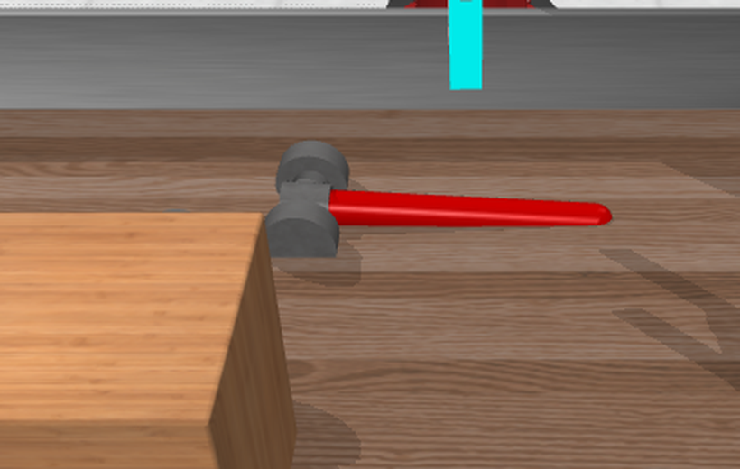
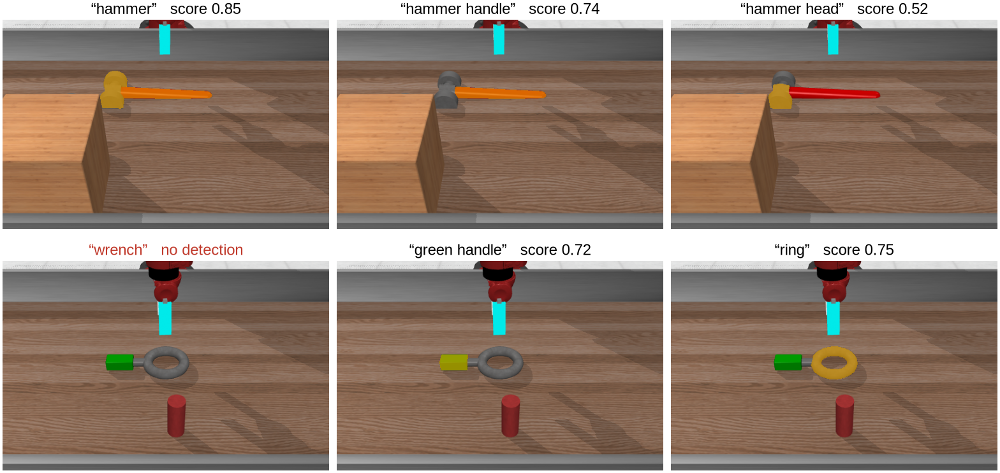
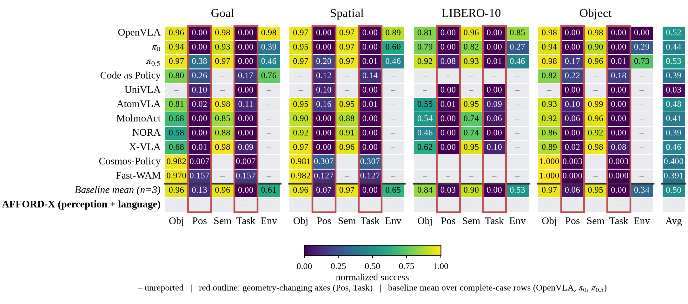

AFFORD-X: Affordance-Grounded Agentic Policy for Zero-Shot Robot Manipulation
†Corresponding author. Yeungnam University.

Abstract
Direct action generation can commit to an interaction that is plausible, even stable, and still wrong for the task: a hammer held by its head, a bowl grasped where the fingers cannot close. AFFORD-X makes that choice explicit and inspectable. A semantic proposer (Gemini 3.8 Flash) turns the instruction into a typed intent, SAM3 grounds the object parts that intent names, and a feasibility-first rule removes candidate interactions the embodiment cannot execute before functional affordance and task compatibility rank the rest. No module is trained. Evaluation is counterfactual: every compared method ranks the same content-hashed candidate set, and every candidate is executed from the identical start state in the benchmark's own simulator, so a success difference is a difference in the selected interaction. In the pilot phase on LIBERO-PRO Spatial with a 7-DoF Franka, feasibility-first selection with task compatibility succeeds in 0.96 [0.90, 0.98] of position-perturbed scenes (n = 100) and 0.95 [0.88, 0.98] of task-perturbed scenes (n = 80), +0.35 and +0.24 over random choice among the same candidates. Those runs read object geometry and the goal from simulator state, so they bound the selection layer and are not comparable with policy results on the LIBERO-PRO leaderboard. On an 11-task Meta-World pilot with a 4-DoF Sawyer, no decision spec beats random choice, the proposer arms miss their declared bar, and SAM3 part grounding lowers functional-part selection against a geometric partition, because its handle mask reaches the head and a distance-based score cannot separate adjacent parts. We report every null beside the positive result, with go/no-go rules declared before each run, paired bootstrap intervals and rollout videos recorded during evaluation.
From Instruction to Interaction
Five stages. Four are frozen off-the-shelf components; the selection rule is ours. Pick a stage.
The Terms and the Rule
Feasibility decides eligibility. Function and task decide preference. The rule decides how they combine.
Three factors
r is 1 inside the embodiment's workspace and 0.1 outside; a scores alignment with the executor's top-down approach, with a floor of 0.3; c scores clearance from obstacle points against a 5 cm margin. None of them looks at the object's function.
The gate
A candidate is eligible when r·a·c ≥ 0.5. When no candidate passes, the rule abstains and the episode counts as a failure, rather than executing something the arm cannot do.
Where the region comes from
A category prior names the handle for handled tools and containers; the semantic proposer's intent can name any region. Objects without a named region score every candidate neutrally.
Where the points come from
grasp_region:<part> scores 1.0 within 3 cm of the part's points, falling to 0 at
8 cm. The points come from SAM3 masks lifted through depth, or, for the contrast specs, from a
geometric partition of the object cloud. The Meta-World pilot shows why this distinction matters.
Compiled from the next action
The declared next action (place, insert, pour, stack, hand over) compiles into geometric constraints over the candidate set: which part must stay clear, which face needs clearance, which approach keeps the view.
What it has shown so far
Adding the task term on top of feasibility adds +0.10 [+0.05, +0.16] on LIBERO-PRO Spatial Pos and +0.09 [0.00, +0.18] under Task, where the declared bar (a lower bound above zero) is missed.
grasp_regionkeep_part_clearclearanceapproach_fromavoid_occluding
Measured as a factorial
Every level L1 to L4 runs the same rank terms under gate ∈ {none, feasibility} and combination ∈ {weighted sum, product}, so the gate and the combination rule are measured separately rather than as one package.
What decides on the Franka
On LIBERO-PRO Spatial Pos, gating a weighted sum adds +0.69 [+0.60, +0.78] at L1, while the gate changes nothing once the product rule is fixed: a product already drives an infeasible candidate to zero. Feasibility has to bind; how it binds is secondary.
How We Measure
Every method ranks the same set
Candidate sets are content-hashed and shared across methods, so a difference in success is a difference in which interaction was selected.
Every candidate is executed
From the identical start state, in the benchmark's own simulator and success check. No method sees these outcomes; sampled re-executions check determinism.
Go/no-go on lower bounds
Each rule is written into the experiment config before its run: a scene-clustered paired bootstrap lower bound (10,000 resamples) against a stated threshold.
Runs are immutable directories with resolved configs, code hashes, package versions and a file manifest, and suites launch from frozen source snapshots. Rollout videos are recorded while the selected candidates execute, and each is checked against the method's selection.
Replay a Real Selection
The hammer scene from the figure, with its 16 logged candidates, their terms and their simulator outcomes. Change the rule and see which candidate is executed and whether it succeeds.

Part source
Combination rule
Terms
Bars are each candidate's final score, normalised to the selected one; gated candidates score zero. Worth trying: with SAM3 masks, switch the task term off and a head grasp is selected, because SAM3's handle points reach the head and the stability term peaks there. Switch the part source to geometric and the handle comes back. This is the Meta-World pilot's SAM3 result in one scene.
What this is. Logged data, not a worked example. Terms and outcomes are read from the SAM3-grounded pilot run; each selection was computed with the engine's decision specs and checked against the selections that run recorded. Stability and simulator outcomes never enter the gate.
LIBERO-PRO Spatial, Franka
One suite in the pilot, both geometry-changing perturbations. Rates with 95% Wilson intervals; hover a bar.
Feasibility decides the outcome
Stability ranking picks the point nearest the centre of mass, which on a bowl is the bottom plate and is not graspable top-down, so it fails in every scene. Against random choice from the same candidates, feasibility-first selection with the task term adds +0.35 under Pos and +0.24 under Task (post hoc).
Privileged state bypasses what these axes test
These runs read candidate geometry from the simulator and the goal from the task file. Pos tests position memorisation and Task tests instruction following, so the numbers bound the selection layer and do not sit beside policy results. The reporting section shows what a comparable row needs.
Meta-World, 11 Tasks, SAM3 Grounding
Five rollouts per task, a 4-DoF Sawyer, and SAM3 part grounding. The same runs contain the geometric-partition specs, so the part source is compared on identical candidates.
SAM3 finds the parts; the score cannot separate them

| Region | Detected | IoU |
|---|
SAM3 parts lower functional-part selection
At L2, SAM3 parts select the functional part less often than the geometric partition in every run, by −0.60 unperturbed and −0.66 under perturbation, and success drops by −0.055 under perturbation. With the task term (L3, L4) the difference is neutral to +0.018.
Proximity is not membership
The handle mask reaches the handle-head junction, so head candidates within 3 cm score 1.0 and the stability term, which peaks at the head, picks them. Assigning each candidate to its nearest segmented region would score membership instead; it is a post hoc change and counts only after it is declared and run on fresh seeds.
The Semantic Proposer
Gemini 3.8 Flash with high reasoning effort, one backbone for every arm, on the 55 unperturbed Meta-World pilot scenes. B1 picks a candidate directly; B2 to B4 use its typed intent inside the decision layer.
110 calls, one model failure and no parser failures; invalid programs are counted, never repaired. The intent names the handle on hammer, assembly and disassemble and the body or top elsewhere, so on 8 of 11 tasks it adds no region beyond the category prior. Each decision is a single call: this is a semantic proposer, and the closed execute-observe-replan loop that “agentic” requires has not been evaluated.
How LIBERO-PRO Will Be Reported
The full phase reports the suite-by-axis matrix beside published policies. Our row stays empty until it is measured under the same protocol.

Candidates from perception
Object candidates and part points from the agent-view camera, SAM3 and depth, not from simulator geometry.
The goal from language
Target and destination parsed by the proposer from the instruction, not read from the task's goal predicate.
All five axes
Obj, Sem and Env are not yet implemented, and Sem only tests a system that reads the instruction.
Nulls and Evidence Boundaries
The negative results carry most of the methodological content, so they are reported in full.
No direct-action policy was run
The central question compares affordance-grounded selection with direct action generation. By author decision no VLA is evaluated, so that comparison is not measured; stability ranking and the proposer's direct choice are proxies, not policies.
Candidates come from simulator state
In both pilots the candidate set and the obstacle geometry are privileged. SAM3 enters only through the functional term, and the LIBERO-PRO goal is read from the task file.
Scripted executors bound success
A correct, feasible grasp that the executor then fails is the largest single failure category on Meta-World. The best-candidate ceiling, not the rule, is the limiting number on several tasks.
Functional is not always actionable
The part a person would hold and the part this executor can use disagree on assembly. Functional-part ground truth also encodes the same prior as the functional term, so only simulator success is an independent measure.
Two videos disagree with the evaluation
In the robustness run, 2 of 2,921 recorded videos show a candidate the parent evaluation did not select for a listed method. Episode outcomes are unaffected, but the discrepancy is traced before the full phase.
Simulation only, no agentic loop yet
Every result is in simulation, the embodiments differ in simulator as well as arm, and no execute-observe-replan loop has run. The real-robot interface is specified but untested.
BibTeX
@misc{sarowar2027affordx,
title = {AFFORD-X: Affordance-Grounded Agentic Policy for Zero-Shot Robot Manipulation},
author = {Md Selim Sarowar and Sungho Kim},
year = {2027},
note = {In preparation},
url = {https://physical-agi.github.io/AFFORD-X/}
}Placeholder entry, to be replaced by the proceedings entry once the paper is accepted.